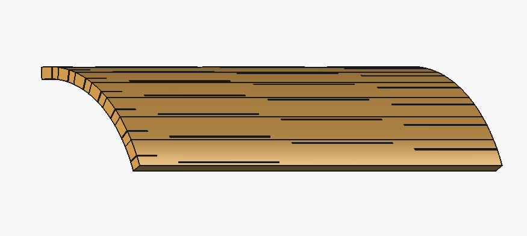
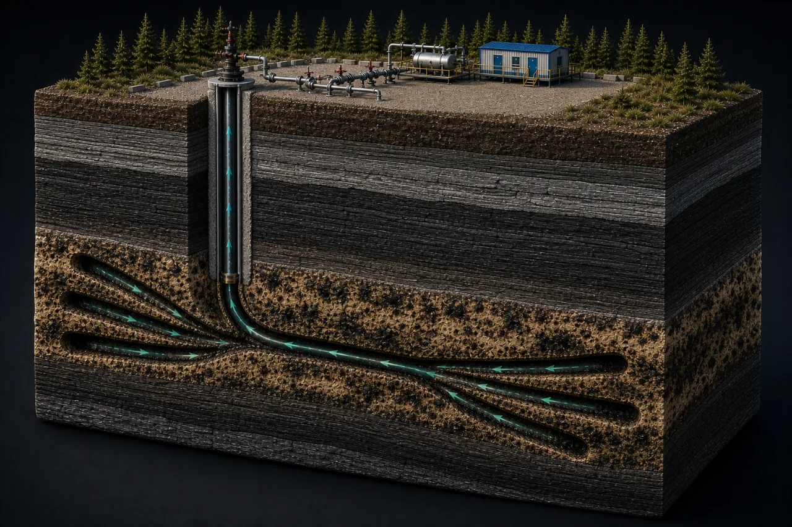

Flagship Tool — Well-Fi
Know the Unknown.
Well-Fi is Yotin's wireless downhole telemetry tool — live pressure, temperature, and vibration from deep in the well, with no cable run. It leads our completions lineup, and it's built into what comes next: every Yotin sand control and flow control system deploys Well-Fi-ready, so the completion that protects your well also reports on it.
What We Do
Three disciplines. One outcome: wells that perform predictably.
Every well is a system, and so is our lineup. The telemetry that tells you what's really happening downhole, the screen that keeps sand out, and the devices that even out flow — engineered together, with Well-Fi monitoring built into every Yotin completion.
Well-Fi
Wireless downhole telemetry that brings pressure, temperature, and vibration to surface — no cable run.
See how it works 02Sand Control
Slotted-liner completions engineered to each well's real operating envelope, not pulled off a shelf.
See how it works 03Flow Control
Inflow control that keeps long laterals and multilateral wells producing evenly, end to end.
See how it works01 — Well-Fi
Know what's happening downhole, without running a single cable.
Well-Fi is a wireless downhole telemetry tool. It brings pressure, temperature, vibration, and fluid-condition data up from deep in a well with no new cable — most often added as a quick retrofit during a pump change, on any pump type, but it also goes into new wells. A well that used to run blind between interventions starts reporting back in real time. And it isn't a standalone product — Well-Fi is the monitoring layer inside every sand control and flow control system we build.
How it gets data to surface, with no cable
-
01
A fiberglass collar splits the tubing string — the antenna gap that makes everything else possible.
-
02
A low-power EM signal radiates into the surrounding rock instead of looping through steel.
-
03
A surface receiver and ground reference pick up the signal and decode it.
-
04
Readings land on MODBUS RS-485, straight into your existing RTU/SCADA.
02 — Sand Control
Slotted-liner systems engineered to the well, not the catalog.
Sand control is the difference between a well that produces clean for years and one that sands in early. We size every slotted liner against the well's real operating envelope — erosion limits, structural limits, and inflow conformance along the whole lateral — and validate it with computational fluid dynamics instead of rule-of-thumb sizing. It takes longer to engineer. It holds up longer in the ground.
- Slot geometry sized to the well's real operating envelope, not a standard catalog size
- Validated against erosion and structural limits with computational fluid dynamics
- Engineered for SAGD, thermal, and conventional completions
- Well-Fi-ready — telemetry deploys inside the completion, so the liner that controls sand also monitors the well


03 — Flow Control
Even inflow, end to end — not just sand kept out.
Keeping sand out isn't the same as producing evenly. Long laterals and multilateral wells tend to draw unevenly: a few hot zones do most of the work while the rest of the wellbore rides along for the trip. Our flow control engineering manages that inflow profile across the entire lateral, using the same CFD-driven design discipline behind our sand control work, so production stays distributed instead of concentrated.
- Engineered alongside sand control, not bolted on after the fact
- Built for multilateral and long-reach completions
- Manages conformance along the whole lateral, not just at one point
- Pairs with Well-Fi telemetry to verify the inflow profile in real time — not just at design time
About Yotin
Indigenous-owned. Built from the ground up.
Yotin is Canada's only Indigenous-owned sand control and flow control company, based in Pierceland, Saskatchewan and serving the heavy-oil and oil sands corridor on both sides of the Alberta border. We bring engineering-led sand control, flow control, and downhole telemetry to the operators working this ground — thermal, conventional, and everything those wells need to keep producing safely.
The name comes from yôtin, the Cree word for wind — a force that has always moved across this land. It's a fitting name for a company built to keep energy moving safely out of the ground, and opportunity moving back into the communities here.
Headquartered in Pierceland, Saskatchewan, Canada
Get In Touch
Let's talk about your well.
Tell us what you're running and what it's doing. We'll tell you what we can do about it.
From the Ground Up.
Pierceland, Saskatchewan, Canada